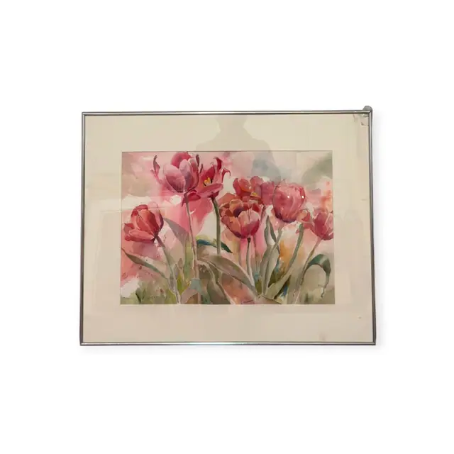
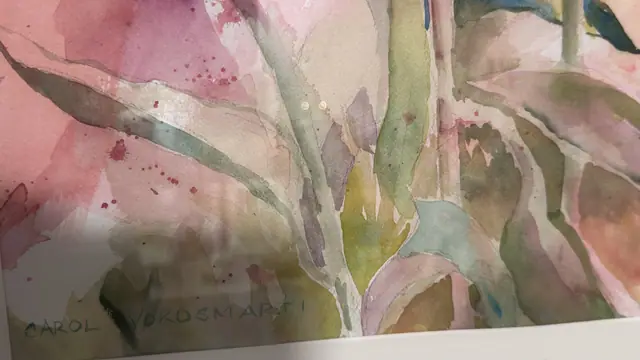

Paintings & Prints
Red Tulips, Original Signed Watercolour, CAROL VOROSMARTI, Signed, Framed
CAROL VOROSMARTI · late 20th century
Price Upon Request


About the Item
CAROL VOROSMARTI. A wet-in-wet floral watercolour in which seven or eight tulip heads in crimson, rose and coral float across a diffused pink and lilac wash. The stems and blade leaves are painted in olive, sage and blue-green with confident single strokes, several of them left to bleed into the background so the bouquet has no hard edge. White paper is reserved for highlights on the petals and a scatter of pigment splatter animates the lower ground. The handling is fluid and unlaboured throughout. Set in a wide cream mat behind glass in a slim polished silver metal frame. Medium: watercolour on paper. Signed lower left of the sheet, in pencil, reading "CAROL VOROSMARTI". Inscribed on the reverse or mount: CAROL VOROSMARTI. Condition: No foxing or fading visible through the glass. Old tape residue and a lifting adhesive patch on the inside of the glass at the upper right corner of the frame; the metal frame corner there is slightly open.
Details
- Creator:
- CAROL VOROSMARTI
- Creation Year:
- late 20th century
- Dimensions:
- Height: 22.75 in (57.79 cm)
Width: 28.25 in (71.75 cm)
outside of frame - Medium:
- watercolour on paper
- Period:
- 20Th
- Condition:
- Offered in the condition shown in the photographs.
- Reference Number:
- VO-176
- Documentation:
- no certificate photographed
- Gallery Location:
- CAROL VOROSMARTI